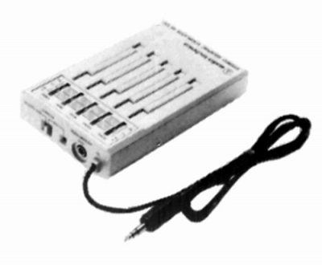

AT720

■価格 9,500円■型式 ステレオ・グラフィック・イコライザー■中心周波数 100/300/1k/3k/10kHz■可変範囲 ±10dB■入力インピーダンス 54Ω■出力 40mW+40mW/32Ω■電源 単3乾電池2本■サイズ 65W×103H×20.5D�o■重量 95g（電池含まず）■発売 1983年頃■販売終了 1984年頃■備考 ハンディタイプの5素子イコライザー
テクニカのインデックスへ